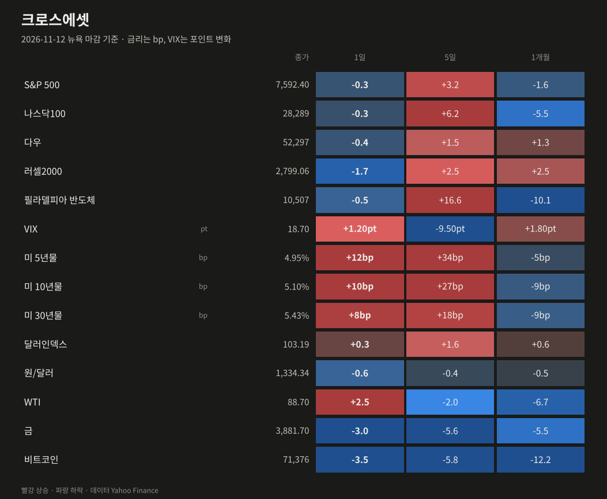
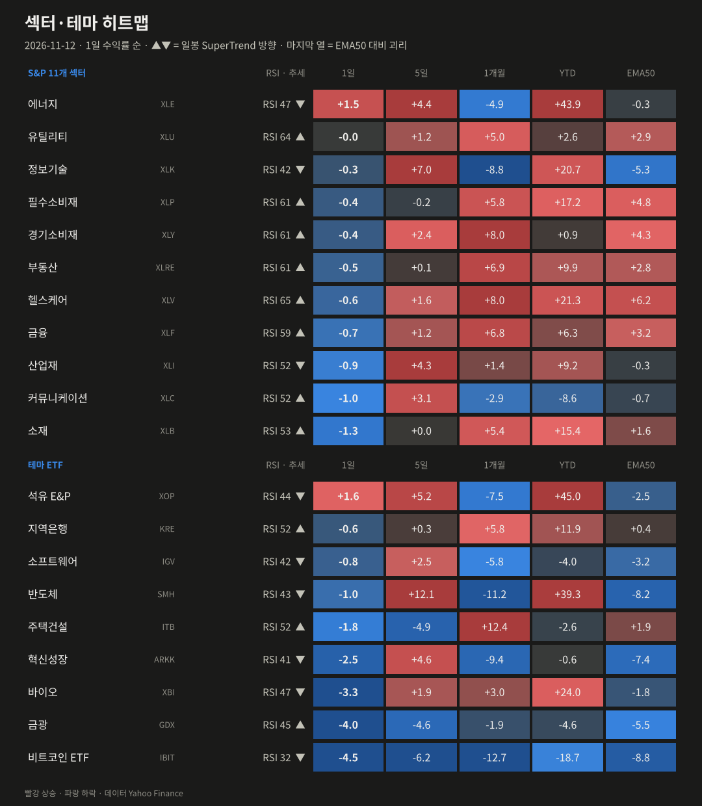
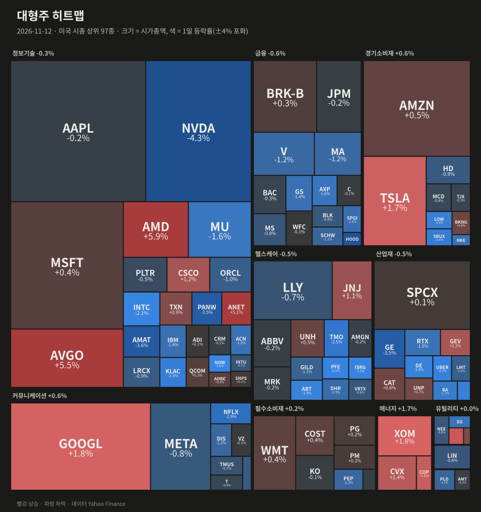
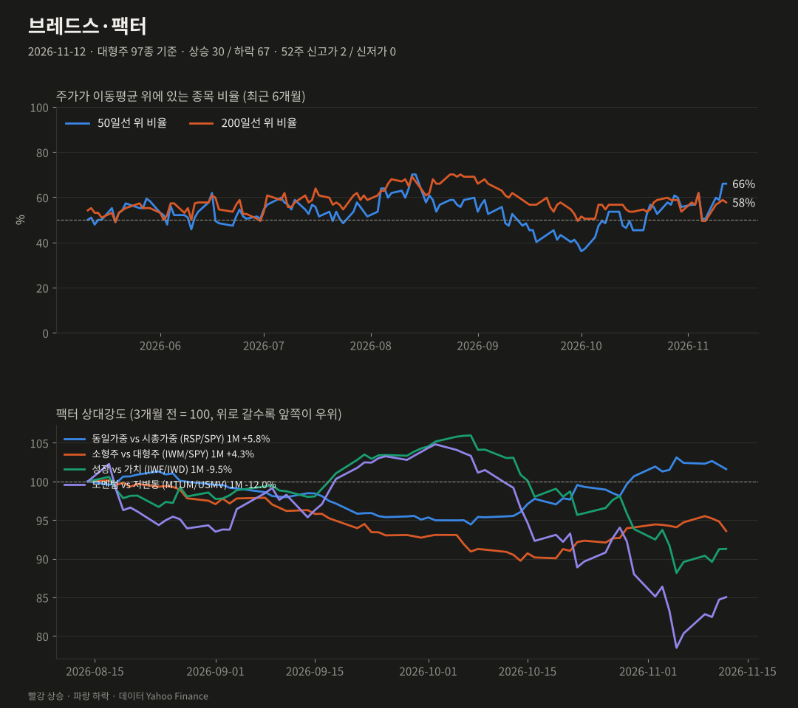
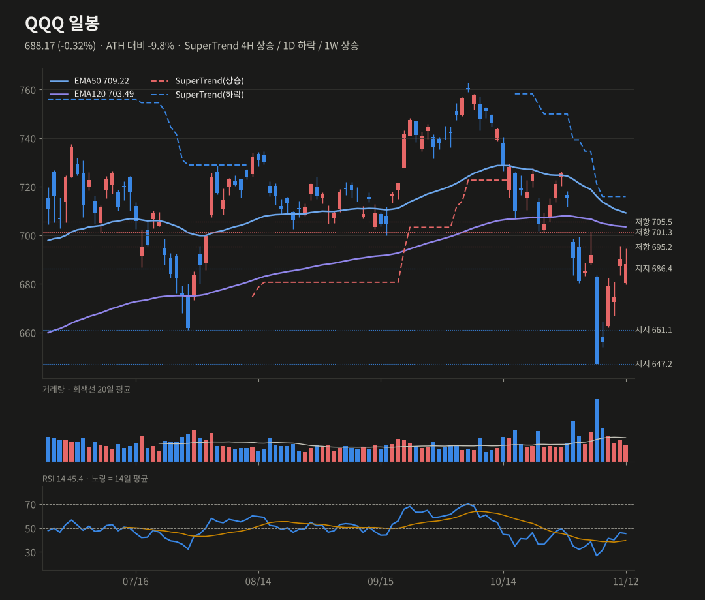
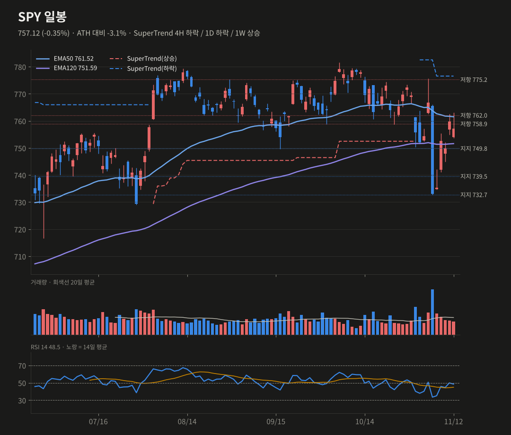
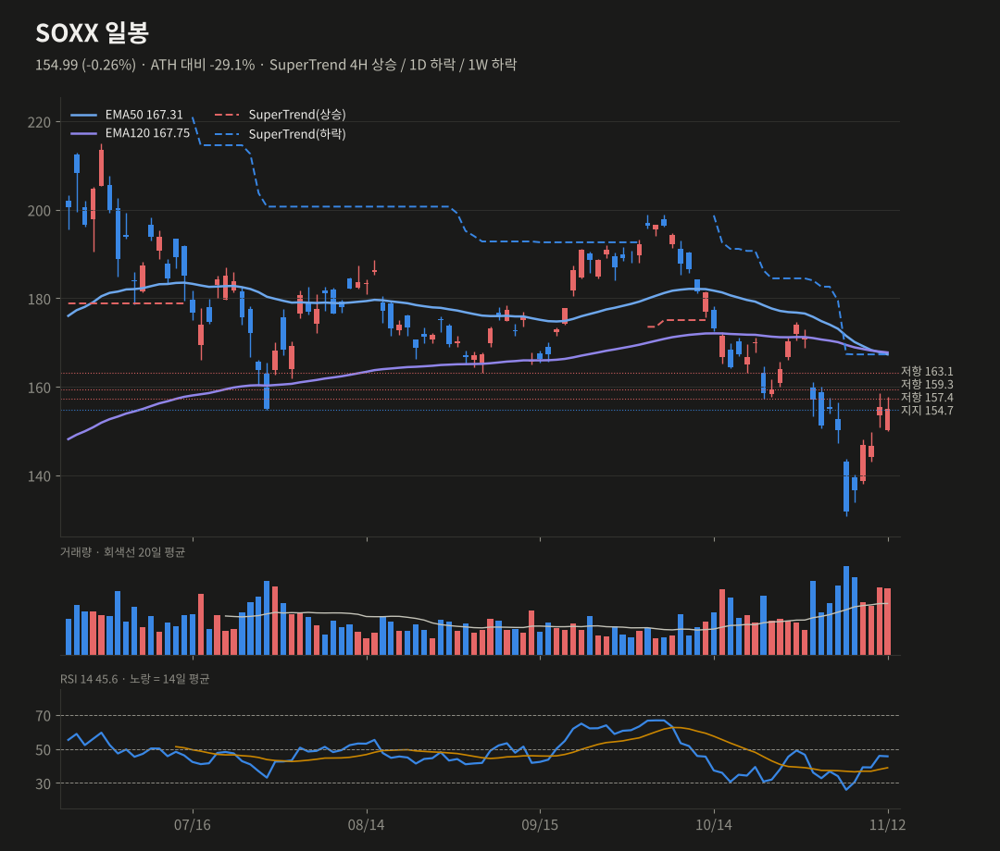
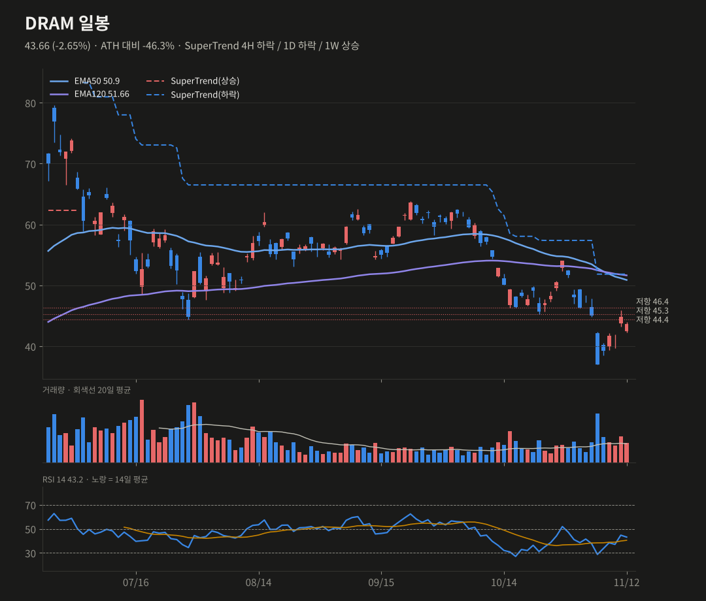

미증시 마감 브리핑
11/12(목) 뉴욕 마감 기준 · 생성 2026-11-13 07:41 KST
엔비디아 젠슨 황 CEO가 사임했어요. 장중 −13%에서 −4.3%까지 줄였지만 금리가 5.10%로 뛰면서 지수는 소폭 하락했어요.
S&P 5007,592.40-0.35%
나스닥10028,289-0.30%
다우52,297-0.36%
러셀20002,799.06-1.66%
반도체(SOX)10,507-0.54%
VIX18.70+1.20pt
미 10년물5.10%+10.50bp
원/달러1,334.34-0.56%
요약
- 젠슨 황 엔비디아 CEO가 사임했고, 크레스 CFO가 임시 CEO예요. NVDA는 장중 −13%에서 −4.3%로 마감했어요.
- AMD +5.9%, AVGO +5.5%가 받쳐 SOX는 −0.5%로 선방했고, SOXX는 일봉 골든크로스예요.
- 10년물이 5.10%(+10.5bp)로 올라 소형주(−1.7%)와 비트코인(−3.5%)이 약했어요.
- 오늘 밤 PPI가 있어요. QQQ 686.4, SPY 751.6이 지지선이에요.
종합 판단
엔비디아 리더십 공백이라는 큰 악재를 시장이 장중에 상당 부분 흡수했어요. 그리고 AMD와 브로드컴 쪽으로 돈이 옮겨가는 모습을 보였어요. 반도체 전체는 오히려 일봉 골든크로스로 회복 신호를 냈어요. 다만 10년물이 5.1%까지 오르며 주택·소형주·비트코인 등 금리 민감 자산이 약했어요. 오늘 밤 PPI가 금리 경로를 다시 흔들 수 있어요.
엔비디아 리더십 공백이라는 큰 악재를 시장이 장중에 상당 부분 흡수했어요. 그리고 AMD와 브로드컴 쪽으로 돈이 옮겨가는 모습을 보였어요. 반도체 전체는 오히려 일봉 골든크로스로 회복 신호를 냈어요. 다만 10년물이 5.1%까지 오르며 주택·소형주·비트코인 등 금리 민감 자산이 약했어요. 오늘 밤 PPI가 금리 경로를 다시 흔들 수 있어요.
무엇이 시장을 움직였나
- 엔비디아 CEO 사임: 08:48 ET에 젠슨 황의 사장·CEO·이사직 즉시 사임이 발표됐어요. 콜레트 크레스 CFO가 임시 CEO를 겸하고, 하비 존스가 첫 이사회 의장이 됐어요. 주가는 시가 −13%, 장중 저점 148.8달러에서 낙폭을 줄여 −4.3%(거래량 4.5배)로 마감했어요.
- 반도체 차별화: AMD +5.9%, AVGO +5.5%, ANET +5.1%로 엔비디아 대체 수요 기대에 매수가 들어왔어요. 반면 AMAT은 −3.6%였어요. SOX는 −0.5%로 선방했어요.
- 금리 급등: 10년물이 10.5bp 올라 5.10%, 5년물은 +11.8bp예요. 모기지 금리가 2000년 이후 최고권이라 10월 기존주택판매가 −5.5%였어요. 주택건설(−1.8%)과 지역은행이 약했어요.
- 위험자산 약세: 비트코인 −3.5%(7.1만 달러), 비트코인 ETF −4.5%, HOOD −3.8%였어요. 금은 −3.0%, 금광주는 −4.0%예요. 유가는 +2.5%(88.7달러)로 에너지만 올랐어요.

| 자산 | 종가 | 1일 | 5일 | 1개월 |
|---|---|---|---|---|
| S&P 500 | 7592.4 | -0.35% | +3.25% | -1.64% |
| 나스닥100 | 28289.19 | -0.30% | +6.23% | -5.55% |
| 다우 | 52297.09 | -0.36% | +1.50% | +1.31% |
| 러셀2000 | 2799.06 | -1.66% | +2.53% | +2.55% |
| 필라델피아 반도체 | 10506.67 | -0.54% | +16.60% | -10.08% |
| VIX | 18.7 | +1.20pt | -9.50pt | +1.80pt |
| 미 5년물 | 4.945 | +11.8bp | +33.7bp | -4.7bp |
| 미 10년물 | 5.103 | +10.5bp | +26.6bp | -8.7bp |
| 미 30년물 | 5.433 | +7.7bp | +18.2bp | -9.2bp |
| 달러인덱스 | 103.19 | +0.27% | +1.61% | +0.62% |
| 원/달러 | 1334.34 | -0.56% | -0.43% | -0.45% |
| WTI | 88.7 | +2.51% | -2.01% | -6.72% |
| 금 | 3881.7 | -2.97% | -5.64% | -5.51% |
| 비트코인 | 71376.16 | -3.50% | -5.77% | -12.22% |

| 섹터·테마 | 1일 | 5일 | 1개월 | YTD | RSI | 일봉 추세 |
|---|---|---|---|---|---|---|
| 석유 E&P XOP | +1.65% | +5.18% | -7.45% | +45.0% | 44 | 하락 |
| 에너지 XLE | +1.51% | +4.38% | -4.88% | +43.9% | 47 | 하락 |
| 유틸리티 XLU | -0.02% | +1.18% | +5.01% | +2.6% | 64 | 상승 |
| 정보기술 XLK | -0.34% | +7.01% | -8.75% | +20.7% | 42 | 하락 |
| 필수소비재 XLP | -0.43% | -0.21% | +5.81% | +17.2% | 61 | 상승 |
| 경기소비재 XLY | -0.44% | +2.40% | +8.04% | +0.9% | 61 | 상승 |
| 부동산 XLRE | -0.52% | +0.14% | +6.92% | +9.9% | 61 | 상승 |
| 헬스케어 XLV | -0.59% | +1.58% | +7.97% | +21.3% | 65 | 상승 |
| 지역은행 KRE | -0.59% | +0.29% | +5.81% | +11.9% | 52 | 상승 |
| 금융 XLF | -0.72% | +1.23% | +6.77% | +6.3% | 59 | 상승 |
| 소프트웨어 IGV | -0.76% | +2.46% | -5.76% | -4.0% | 42 | 하락 |
| 산업재 XLI | -0.89% | +4.29% | +1.44% | +9.2% | 52 | 하락 |
| 커뮤니케이션 XLC | -0.96% | +3.09% | -2.94% | -8.6% | 52 | 상승 |
| 반도체 SMH | -1.03% | +12.06% | -11.16% | +39.3% | 43 | 하락 |
| 소재 XLB | -1.28% | +0.02% | +5.38% | +15.4% | 53 | 상승 |
| 주택건설 ITB | -1.76% | -4.93% | +12.45% | -2.6% | 52 | 상승 |
| 혁신성장 ARKK | -2.51% | +4.58% | -9.45% | -0.6% | 41 | 하락 |
| 바이오 XBI | -3.27% | +1.89% | +3.02% | +24.0% | 47 | 하락 |
| 금광 GDX | -3.95% | -4.56% | -1.87% | -4.6% | 45 | 상승 |
| 비트코인 ETF IBIT | -4.45% | -6.20% | -12.72% | -18.7% | 32 | 하락 |

| 상승 상위 | 1일 | 거래량(20일 대비) | 하락 상위 | 1일 | 거래량 |
|---|---|---|---|---|---|
| AMD | +5.86% | x1.72 | NVDA | -4.34% | x4.47 |
| AVGO | +5.54% | x1.67 | HOOD | -3.82% | x0.66 |
| ANET | +5.06% | x1.08 | AMAT | -3.58% | x1.04 |
| CEG | +2.79% | x0.89 | PANW | -3.53% | x0.96 |
| XOM | +1.84% | x0.86 | GE | -3.47% | x0.78 |
| GOOGL | +1.79% | x0.88 | NFLX | -2.87% | x0.67 |

대형주 97종: 상승 30 / 하락 67 · 50일선 위 66.0% (전일 66.0%, 5일 전 50.5%) · 200일선 위 57.7% · 52주 신고가 2 / 신저가 0
오른 종목 30, 내린 종목 67로 지수보다 내부가 약했어요. 러셀2000 −1.7%, 동일가중 −0.9%로 금리 상승에 민감한 소형·경기주가 더 빠졌어요. SMA50 위 종목 비율은 66.0%를 유지했어요.
| 팩터 스프레드 | 1일 | 5일 | 1개월 |
|---|---|---|---|
| 동일가중 vs 시총가중 (RSP/SPY) | -0.51% | -1.47% | +5.78% |
| 소형주 vs 대형주 (IWM/SPY) | -1.29% | -0.52% | +4.30% |
| 성장 vs 가치 (IWF/IWD) | +0.04% | +3.54% | -9.54% |
| 모멘텀 vs 저변동 (MTUM/USMV) | +0.39% | +8.38% | -11.97% |
기술적 분석 · 확률
TradingView 설정과 맞춘 지표(EMA50·EMA120, SuperTrend ATR20×4, RSI14, MACD 12/26/9). 확률은 차트 기반 추정치예요.
QQQ 688.17 -0.32%
SuperTrend 4H 상승 / 1D 하락 / 1W 상승 · RSI 45.38
단기 반등 55% (-5) · 스윙 상승 40%
엔비디아 충격에도 686.4 지지를 지켰고, 일봉 히스토그램이 0선에 근접했어요(−1.87 → −0.54). 일봉 골든크로스 임박이에요. 다만 10년물 5.1%가 상단을 누르고, 일봉 EMA120(703.5)과 SuperTrend(715.9)가 저항이에요.
상방 695.3 돌파 → 701.3~705.5
하방 686.4 이탈 → 672.1(주봉 EMA50)
SuperTrend 4H 상승 / 1D 하락 / 1W 상승 · RSI 45.38
단기 반등 55% (-5) · 스윙 상승 40%
엔비디아 충격에도 686.4 지지를 지켰고, 일봉 히스토그램이 0선에 근접했어요(−1.87 → −0.54). 일봉 골든크로스 임박이에요. 다만 10년물 5.1%가 상단을 누르고, 일봉 EMA120(703.5)과 SuperTrend(715.9)가 저항이에요.
상방 695.3 돌파 → 701.3~705.5
하방 686.4 이탈 → 672.1(주봉 EMA50)
SPY 757.12 -0.35%
SuperTrend 4H 하락 / 1D 하락 / 1W 상승 · RSI 48.5
단기 반등 50% (-5) · 스윙 상승 40% (-5)
758.9 저항 앞에서 밀렸고 4H SuperTrend(765.7)도 하락이에요. 일봉 히스토그램은 개선 중(−0.29)이지만, 금리 5.1%와 약한 브레드스가 부담이에요. 일봉 EMA120(751.6)이 지지선이에요.
상방 758.9 회복 → 762.0, 765.7
하방 751.6 이탈 → 749.8, 739.5
SuperTrend 4H 하락 / 1D 하락 / 1W 상승 · RSI 48.5
단기 반등 50% (-5) · 스윙 상승 40% (-5)
758.9 저항 앞에서 밀렸고 4H SuperTrend(765.7)도 하락이에요. 일봉 히스토그램은 개선 중(−0.29)이지만, 금리 5.1%와 약한 브레드스가 부담이에요. 일봉 EMA120(751.6)이 지지선이에요.
상방 758.9 회복 → 762.0, 765.7
하방 751.6 이탈 → 749.8, 739.5
SOXX 154.99 -0.26%
SuperTrend 4H 상승 / 1D 하락 / 1W 하락 · RSI 45.63
단기 반등 60% · 스윙 상승 40% (+5)
엔비디아 −4.3%에도 −0.3%에 그쳤고, 일봉 MACD가 골든크로스로 돌아섰어요. 154.7 지지와 주봉 EMA50(151.8)을 지키고 있어요. 일봉 EMA 밀집대(167.3~167.8)가 다음 관문이에요.
상방 159.3 돌파 → 163.1, 167.3~167.8
하방 151.8 이탈 → 146.6
SuperTrend 4H 상승 / 1D 하락 / 1W 하락 · RSI 45.63
단기 반등 60% · 스윙 상승 40% (+5)
엔비디아 −4.3%에도 −0.3%에 그쳤고, 일봉 MACD가 골든크로스로 돌아섰어요. 154.7 지지와 주봉 EMA50(151.8)을 지키고 있어요. 일봉 EMA 밀집대(167.3~167.8)가 다음 관문이에요.
상방 159.3 돌파 → 163.1, 167.3~167.8
하방 151.8 이탈 → 146.6
DRAM 43.66 -2.65%
SuperTrend 4H 하락 / 1D 하락 / 1W 상승 · RSI 43.17
단기 반등 50% (-5) · 스윙 상승 30%
−2.7%로 44.4 아래로 다시 밀렸어요. 4H 거래량이 평균의 4.9배로 매물 소화가 진행 중이에요. 일봉 히스토그램은 0선 근처(−0.08)이고, 44.4~46.6 매물대 돌파가 과제예요.
상방 44.4 회복 → 46.2~46.6
하방 41.5 이탈 → 38.5(주봉 EMA120)
SuperTrend 4H 하락 / 1D 하락 / 1W 상승 · RSI 43.17
단기 반등 50% (-5) · 스윙 상승 30%
−2.7%로 44.4 아래로 다시 밀렸어요. 4H 거래량이 평균의 4.9배로 매물 소화가 진행 중이에요. 일봉 히스토그램은 0선 근처(−0.08)이고, 44.4~46.6 매물대 돌파가 과제예요.
상방 44.4 회복 → 46.2~46.6
하방 41.5 이탈 → 38.5(주봉 EMA120)




일정
- 11/13 10월 PPI
- 엔비디아 후임 CEO·실적 일정
- 12/9 FOMC(인상 거의 확실)
출처
- Stocks Closed Slightly Lower in the Stock Market Today, November 12, 2026, and Nvidia Said CEO Jensen Huang Resigned (StockTitan)
- Trading Day: Weathering the Nvidia storm (Reuters via Investing.com)
- Stock Market Recap — November 12, 2026: Nvidia Leadership Shake-Up and Rising Bond Yields Pressure Wall Street (Alain Guillot)
데이터 Yahoo Finance·Nasdaq. 색은 한국식(빨강 상승·파랑 하락). 투자 판단의 참고 자료예요. 지난 브리핑